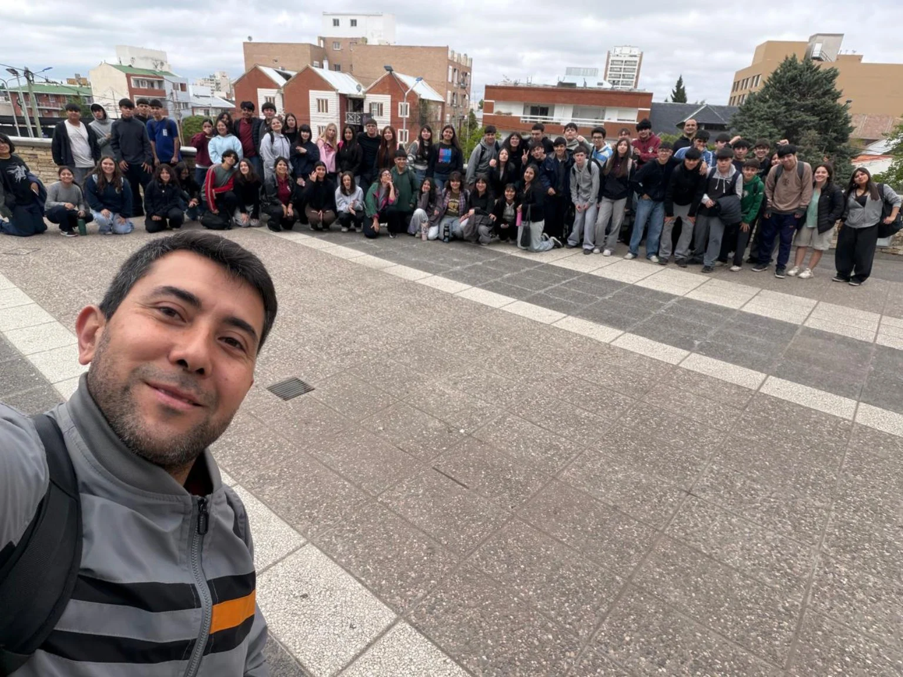

NUESTRA ESCUELA EN IMÁGENES
Trabajos, encuentros
y experiencias.
Una mirada a lo que compartimos y construimos juntos.

No se pudo cargar esta foto. Podés continuar con las flechas.
Encuentro de la comunidad educativa
Foto 1 de 10Usá las flechas para avanzar o volver. En el celular también podés deslizar la foto.